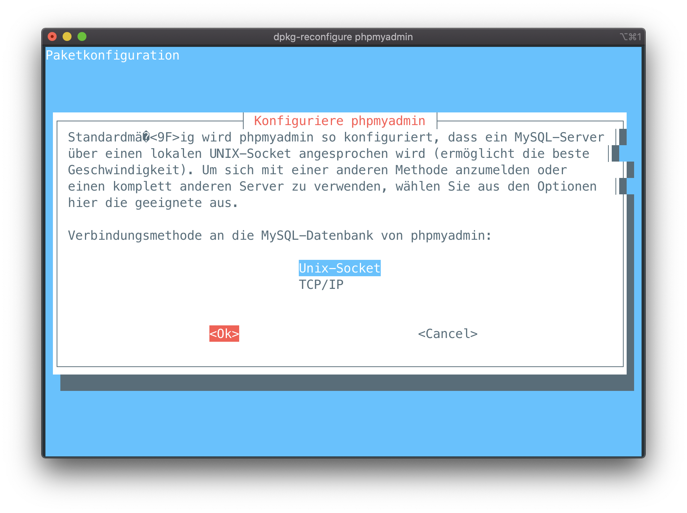
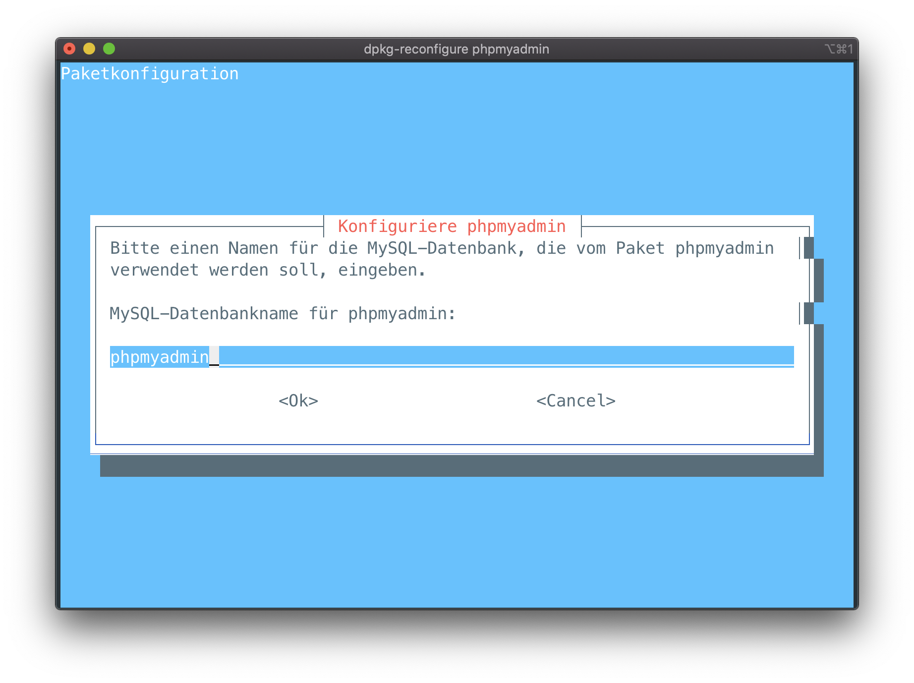
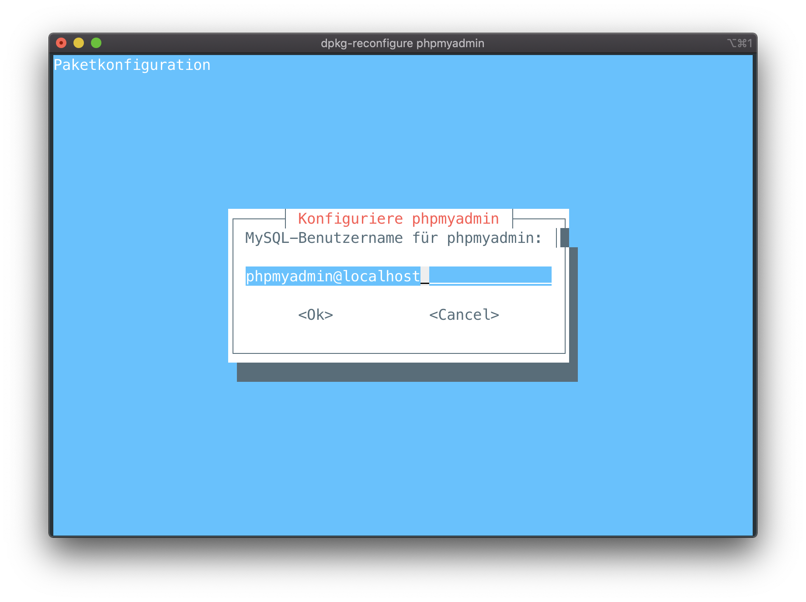
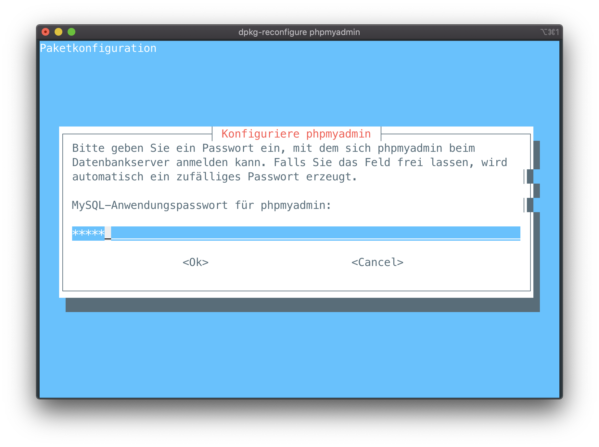
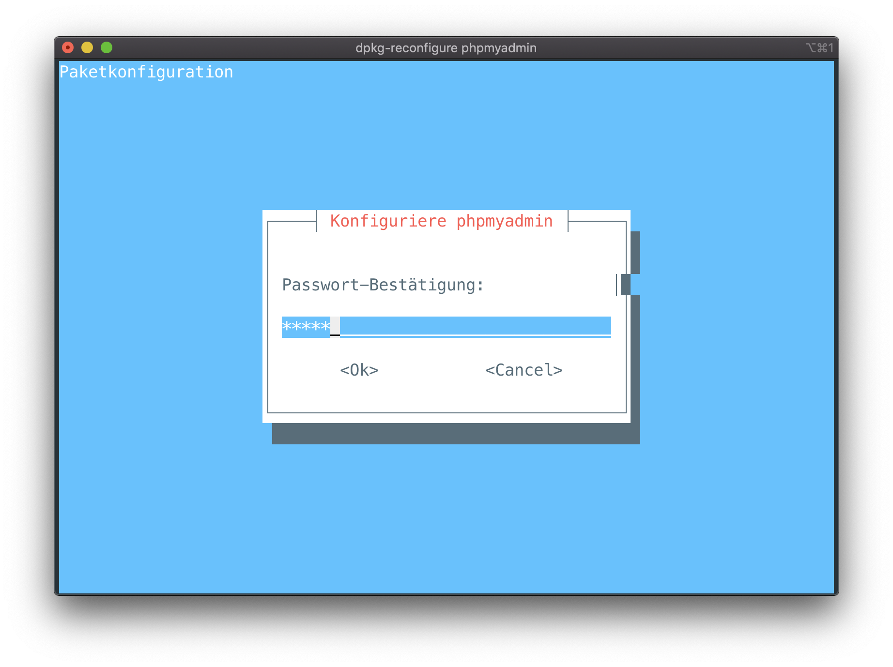
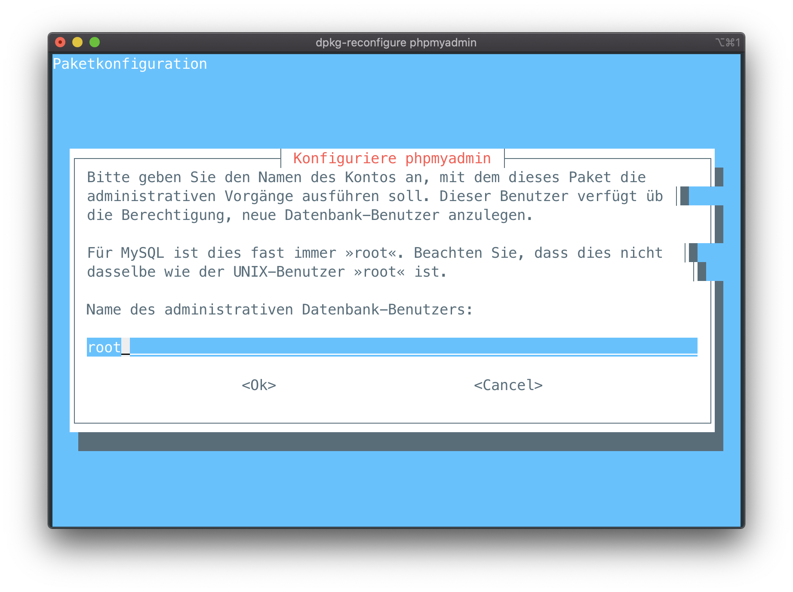
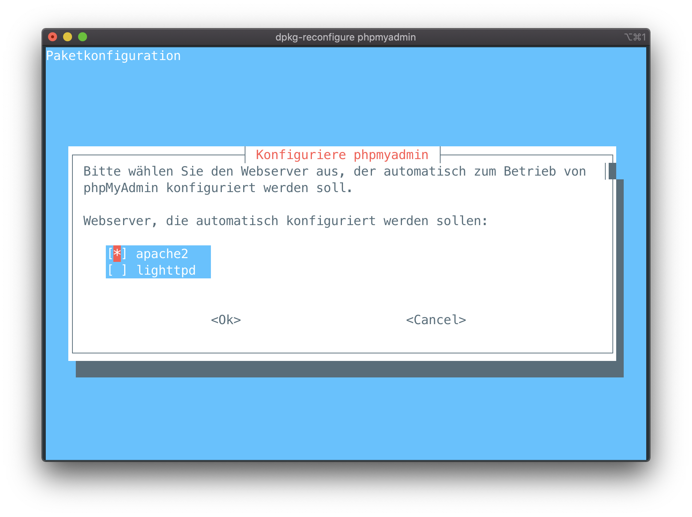
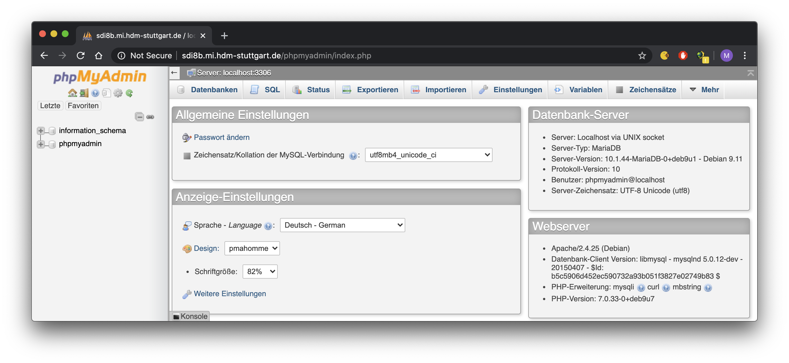

5. MySQL database administration
We installed a MariaDB server next to our Apache Webserver and managed it with phpmyadmin. To do so, we installed the MariaDB server and phpmyadmin.
apt install mariadb-server phpmyadmin
After we executed dpkg-reconfigure phpmyadmin we followed the guided setup.








We were able to access sdi8b.mi.hdm-stuttgart.de/phpmyadmin using our login credentials phpmyadmin as username and sdi8b as password:
